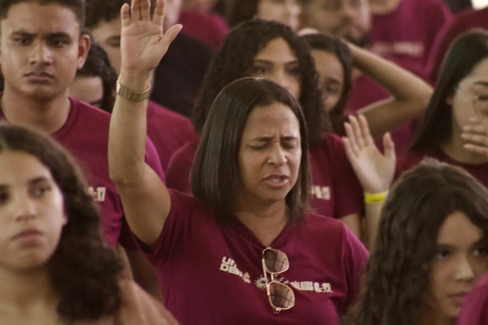
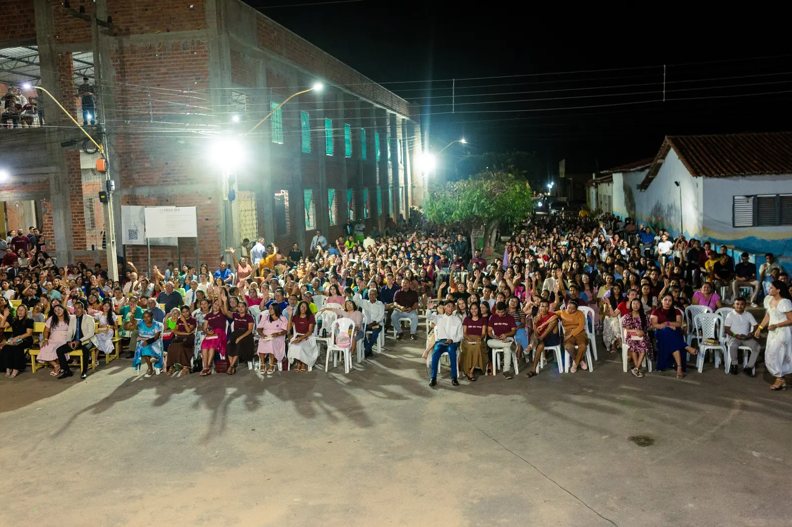
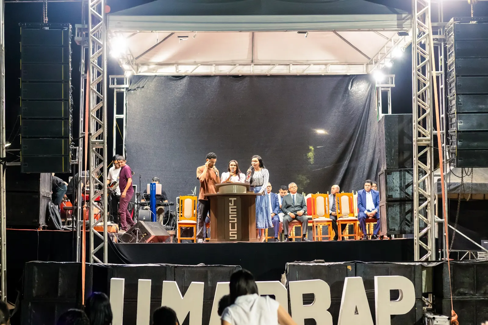
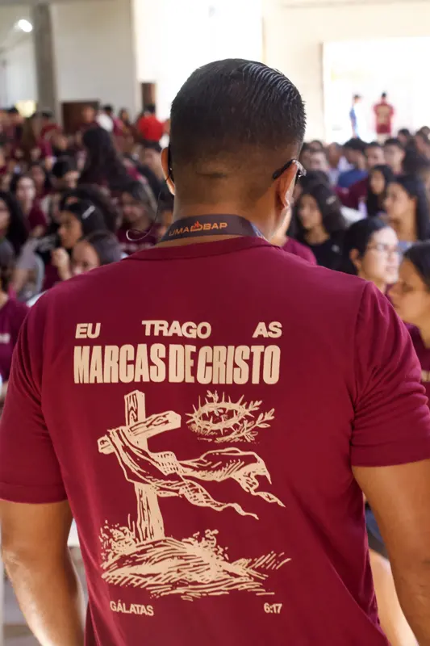
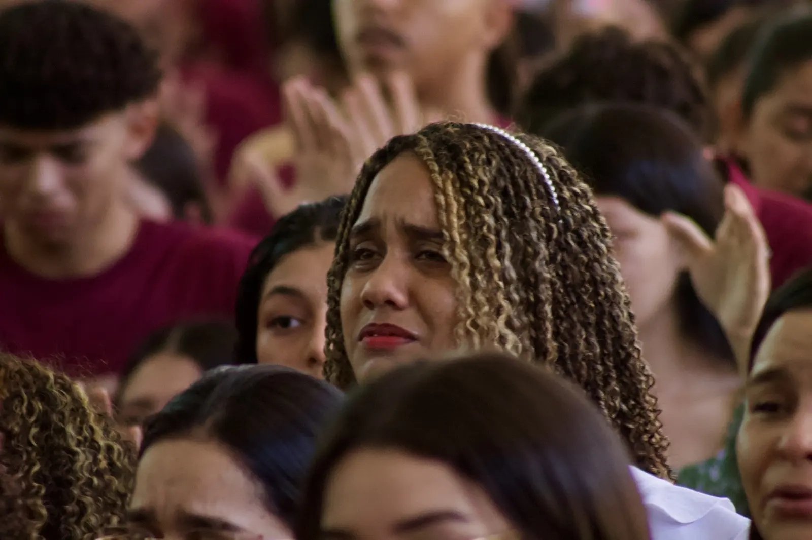

Congresso da UMADBAP · 2026
8º Congresso
“Eu trago as marcas de Cristo” — Gálatas 6:17
Eu trago as marcas de Cristo
“Desde agora, ninguém me inquiete; porque trago no meu corpo as marcas do Senhor Jesus.” Gálatas 6:17
Em 2026, a mocidade do Baixo Parnaíba se encontrou em Santa Quitéria para o 8º Congresso da UMADBAP: três dias e cinco cultos, de manhã e à noite, no templo e na rua.
As bandeiras das cidades, o templo cheio, a galeria lotada e uma geração inteira de mãos levantadas.
Três dias, cinco cultos
Os cultos
- Dia I
Noite de abertura
O templo cheio, as bandeiras das cidades e o tema no telão: começou o 8º Congresso.

Dia IIManhã
Louvor, Palavra e altar. A mocidade de mãos erguidas, sem pressa de ir embora.

Dia IINoite
O culto ganhou a rua: palco montado e a cidade inteira chamada a ouvir.
 Dia III
Dia IIIManhã
Galeria lotada. Uma geração inteira louvando as obras de Deus.

Dia IIINoite de encerramento
A última noite — e a certeza de que as marcas vão com a gente pra casa.
As marcas, nos rostos
Ninguém sai do altar do mesmo jeito que chegou






Vozes do 8º Congresso
- Sofia Oliveira
- Amanda Garcês
- Jessica Thuanny
- João Pedro
- Pr. Isaac Monteiro
Galeria
Fotos por culto
Toque no culto que você quer ver: as fotos abrem no Google Drive, onde dá para ver em tamanho grande e baixar.
Gratidão
“Grandes coisas fez o Senhor por nós, pelas quais estamos alegres.”
Salmos 126:3
À Assembleia de Deus em Santa Quitéria, que abriu as portas e cuidou de cada detalhe do 8º Congresso, ao Projeto Marcos e a cada jovem, pastor, músico e voluntário que fez esses dias acontecerem. Pela coordenação da UMADBAP, Pastor Paulo Roberto.